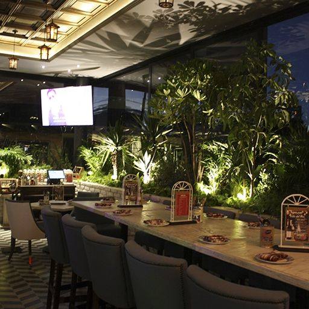

Somos una familia que comparte una misma pasión: La cocina. Nosotros nos sentimos identificados con
el poder hacer feliz a la gente por medio de la comida, es por eso que en cada platillo ponemos
una parte de nosotros y los realizamos con mucho amor. Galvan's fue fundado por nuestro mesero: Leonel
Galván. Él desde chico veía un gran potencial en la familia, así que decidió iniciar desde 0 en un
local pequeño en el centro. Logró un gran éxito y se fue expandiendo hasta ser lo que hoy se conoce
como la cocina de México.